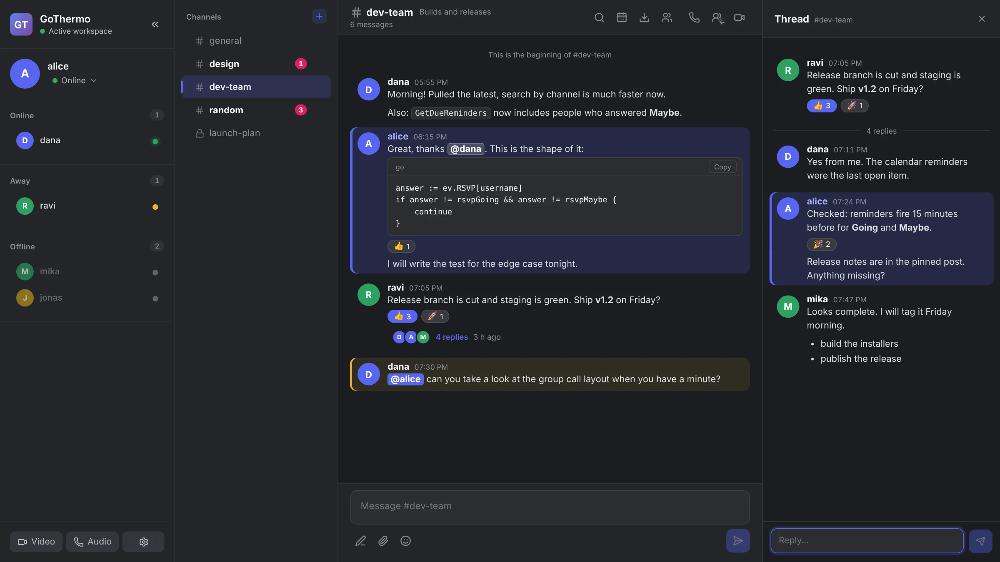
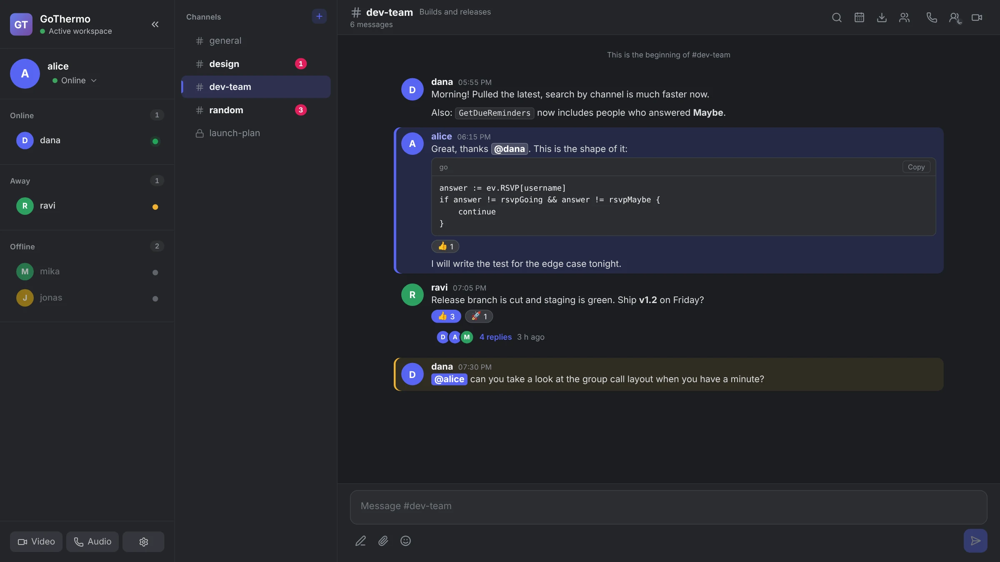
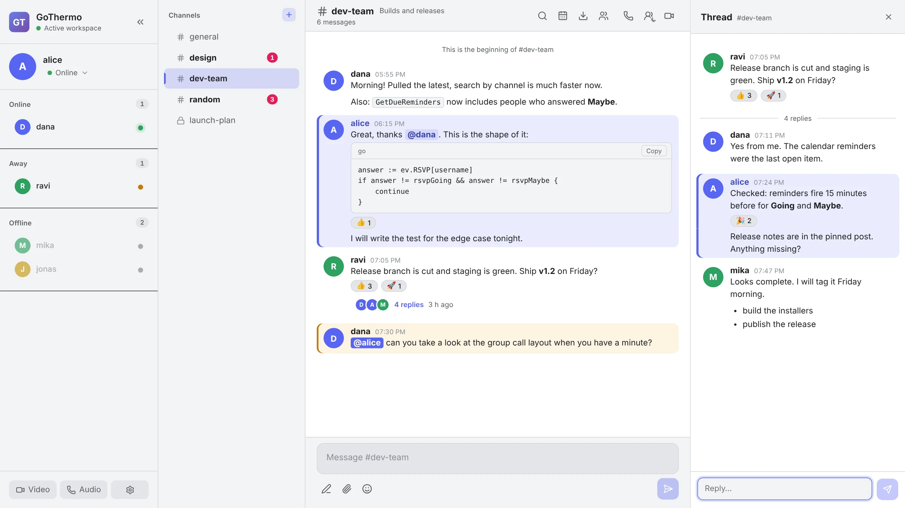

GoThermo is a fast desktop messenger with channels, threads, code blocks, calendar events and calls. It is written in Go and React, stores everything in Redis, and keeps your data with you.

Private channels only reach their members. Unread badges, search inside a channel, and a full history that loads as you scroll.
Answer a message in a side panel and keep the channel readable. Reply counts and avatars show on the parent, and everything updates live.
Bold, lists, inline code and fenced code blocks with a copy button. Paste a Go snippet and it stays a snippet.
Mention a teammate and the message lights up for them. React with an emoji instead of sending "ok".
Schedule a meeting, collect Going, Maybe and No answers, and get a reminder before it starts.
Call one person or the whole group. Call history is written to the channel so nobody wonders who called.
Both themes ship with the app and follow your system setting.


The app is a native window built with Wails. The Go backend talks to Redis and pushes live updates over a local WebSocket. There is no sign-up and nothing is sent to us.
Every tagged version is built automatically on GitHub and attached to a release.
localhost:6379 and its own local WebSocket. Today that means a copy chats with itself and with other windows on the same machine, not with copies on other computers. Connecting a whole team through one shared server is the next item on the roadmap.Start Redis first:
brew install redis && brew services start redis # macOS sudo apt install redis-server # Linux docker run -d -p 6379:6379 redis # any OS
The builds are not code-signed yet. Windows SmartScreen may say "unknown publisher" (More info, then Run anyway). On macOS, right-click the app and choose Open the first time.